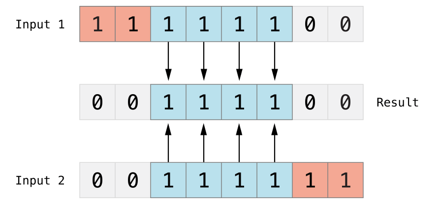
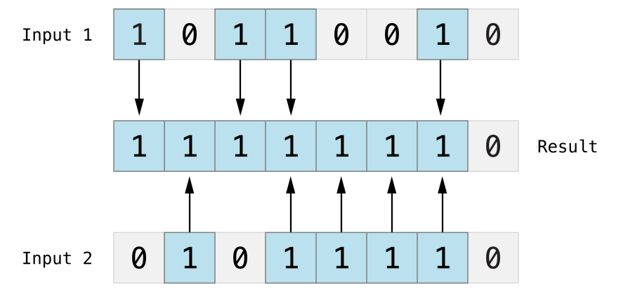
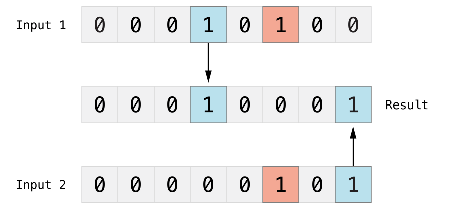
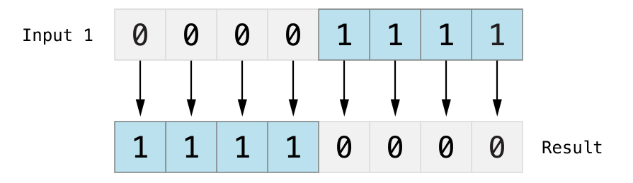

Swift 演算子
演算子は、コンパイラに数学的または論理的な演算を実行するよう指示する記号です。
Swift では以下の演算子が用意されています：
- 算術演算子
- 比較演算子
- 論理演算子
- ビット演算子
- 代入演算子
- 範囲演算子
- その他の演算子
この章では、算術演算子、関係演算子、論理演算子、ビット演算子、代入演算子、その他の演算子について詳しく説明します。
算術演算子
次の表は、Swift 言語でサポートされている算術演算子を示しています。ここで、変数 A は 10、変数 B は 20 です。
| 演算子 | 説明 | 例 |
|---|---|---|
| + | 加算 | A + B の結果は 30 |
| − | 減算 | A − B の結果は -10 |
| * | 乗算 | A * B の結果は 200 |
| / | 除算 | B / A の結果は 2 |
| % | 剰余 | B % A の結果は 0 |
注意：Swift 3 では廃止されました++、--。
実例
以下は算術演算の簡単な実例です：
import Cocoa
var A = 10
var B = 20
print("A + B 结果为：\(A + B)")
print("A - B 结果为：\(A - B)")
print("A * B 结果为：\(A * B)")
print("B / A 结果为：\(B / A)")
A += 1 // 类似 A++
print("A += 1 后 A 的值为 \(A)")
B -= 1 // 类似 B--
print("B -= 1 后 B 的值为 \(B)")
上記のプログラムの実行結果は次のとおりです：
A + B 结果为：30 A - B 结果为：-10 A * B 结果为：200 B / A 结果为：2 A += 1 后 A 的值为 11 B -= 1 后 B 的值为 19
比較演算子
次の表は、Swift 言語でサポートされている比較演算子を示しています。ここで、変数 A は 10、変数 B は 20 です。
| 演算子 | 説明 | 例 |
|---|---|---|
| == | 等しい | (A == B) は false です。 |
| != | 等しくない | (A != B) は true です。 |
| > | より大きい | (A > B) は false です。 |
| < | より小さい | (A < B) は true です。 |
| >= | 以上 | (A >= B) は false です。 |
| <= | 以下 | (A <= B) は true です。 |
実例
以下は比較演算の簡単な実例です：
import Cocoa
var A = 10
var B = 20
print("A == B 结果为：\(A == B)")
print("A != B 结果为：\(A != B)")
print("A > B 结果为：\(A > B)")
print("A < B 结果为：\(A < B)")
print("A >= B 结果为：\(A >= B)")
print("A <= B 结果为：\(A <= B)")
上記のプログラムの実行結果は次のとおりです：
A == B 结果为：false A != B 结果为：true A > B 结果为：false A < B 结果为：true A >= B 结果为：false A <= B 结果为：true
論理演算子
次の表は、Swift 言語でサポートされている論理演算子を示しています。ここで、変数 A は true、変数 B は false です。
| 演算子 | 説明 | 例 |
|---|---|---|
| && | 論理積（AND）。演算子の両側が TRUE の場合に TRUE になります。 | (A && B) は false です。 |
| || | 論理和（OR）。演算子の両側の少なくとも一方が TRUE の場合に TRUE になります。 | (A || B) は true です。 |
| ! | 論理否定（NOT）。ブール値を反転させ、true を false に、false を true にします。 | !(A && B) は true です。 |
以下は論理演算の簡単な実例です：
import Cocoa
var A = true
var B = false
print("A && B 结果为：\(A && B)")
print("A || B 结果为：\(A || B)")
print("!A 结果为：\(!A)")
print("!B 结果为：\(!B)")
上記のプログラムの実行結果は次のとおりです：
A && B 结果为：false A || B 结果为：true !A 结果为：false !B 结果为：true
ビット演算子
ビット演算子はバイナリビットに対して操作を行います。~, &, |, ^ はそれぞれ、否定（NOT）、ビットごとの論理積（AND）、ビットごとの論理和（OR）、ビットごとの排他的論理和（XOR）です。次の表の例を参照してください。
| p | q | p & q | p | q | p ^ q |
|---|---|---|---|---|
| 0 | 0 | 0 | 0 | 0 |
| 0 | 1 | 0 | 1 | 1 |
| 1 | 1 | 1 | 1 | 0 |
| 1 | 0 | 0 | 1 | 1 |
A = 60 および B = 13 とすると、2つの変数に対応するバイナリ値は次のようになります：
A = 0011 1100 B = 0000 1101
ビット演算を行うと：
| 演算子 | 説明 | 図解 | 例 |
|---|---|---|---|
| & | ビットごとの論理積（AND）。ビット積演算子は2つの数値に対して演算を行い、新しい数値を返します。この数値の各ビットは、2つの入力数値の同じ位置のビットが両方とも 1 の場合にのみ 1 になります。 |  |
(A & B) の結果は 12、バイナリでは 0000 1100 |
| | | ビットごとの論理和（OR）。ビット和演算子 | は2つの数値を比較し、新しい数値を返します。この数値の各ビットが 1 に設定される条件は、2つの入力数値の同じ位置のビットが 0 でない場合（つまり、いずれかが 1 であるか、両方とも 1 の場合）です。 |  |
(A | B) の結果は 61、バイナリでは 0011 1101 |
| ^ | ビットごとの排他的論理和（XOR）。ビットごとの XOR 演算子 ^ は2つの数値を比較し、数値を返します。この数値の各ビットが 1 に設定される条件は、2つの入力数値の同じ位置のビットが異なる場合で、同じ場合は 0 に設定されます。 |  |
(A ^ B) の結果は 49、バイナリでは 0011 0001 |
| ~ | ビットごとの否定演算子 ~ は、オペランドの各ビットを反転させます。 |  |
(~A) の結果は -61、バイナリでは 2 の補数形式で 1100 0011 です。 |
| << | ビット左シフト。左シフト演算子（<<）は、オペランドのすべてのビットを指定された桁数だけ左に移動します。 |
次の図は、11111111 << 1（11111111 を 1 ビット左シフト）の結果を示しています。青い数字は移動されたビット、灰色は破棄されたビット、空いた部分はオレンジ色の 0 で埋められます。 
| A << 2 の結果は 240、バイナリでは 1111 0000 |
| >> | ビット右シフト。右シフト演算子（>>）は、オペランドのすべてのビットを指定された桁数だけ右に移動します。 |
次の図は、11111111 >> 1（11111111 を 1 ビット右シフト）の結果を示しています。青い数字は移動されたビット、灰色は破棄されたビット、空いた部分はオレンジ色の 0 で埋められます。 
| A >> 2 の結果は 15、バイナリでは 0000 1111 |
以下はビット演算の簡単な実例です：
import Cocoa
var A = 60 // 二进制为 0011 1100
var B = 13 // 二进制为 0000 1101
print("A&B 结果为：\(A&B)")
print("A|B 结果为：\(A|B)")
print("A^B 结果为：\(A^B)")
print("~A 结果为：\(~A)")
上記のプログラムの実行結果は次のとおりです：
A&B 结果为：12 A|B 结果为：61 A^B 结果为：49 ~A 结果为：-61
代入演算
次の表は、Swift 言語の基本的な代入演算を示しています：
| 演算子 | 説明 | 例 |
|---|---|---|
| = | 単純な代入演算。右側のオペランドを左側のオペランドに代入します。 | C = A + B は A + B の演算結果を C に代入します。 |
| += | 加算してから代入します。左右のオペランドを加算した後、左側のオペランドに代入します。 | C += A は C = C + A と同じです。 |
| -= | 減算してから代入します。左右のオペランドを減算した後、左側のオペランドに代入します。 | C -= A は C = C - A と同じです。 |
| *= | 乗算してから代入します。左右のオペランドを乗算した後、左側のオペランドに代入します。 | C *= A は C = C * A と同じです。 |
| /= | 除算してから代入します。左右のオペランドを除算した後、左側のオペランドに代入します。 | C /= A は C = C / A と同じです。 |
| %= | 剰余を求めてから代入します。左右のオペランドの剰余を求めた後、左側のオペランドに代入します。 | C %= A is equivalent to C = C % A |
| <<= | ビット左シフトしてから代入 | C <<= 2 は C = C << 2 と同じです。 |
| >>= | ビット右シフトしてから代入 | C >>= 2 は C = C >> 2 と同じです。 |
| &= | ビット論理積演算の後に代入 | C &= 2 は C = C & 2 と同じです。 |
| ^= | ビット排他的論理和演算の後に代入 | C ^= 2 は C = C ^ 2 と同じです。 |
| |= | ビット論理和演算の後に代入 | C |= 2 は C = C | 2 と同じです。 |
以下は代入演算の簡単な実例です：
import Cocoa
var A = 10
var B = 20
var C = 100
C = A + B
print("C 结果为：\(C)")
C += A
print("C 结果为：\(C)")
C -= A
print("C 结果为：\(C)")
C *= A
print("C 结果为：\(C)")
C /= A
print("C 结果为：\(C)")
//以下测试已注释，可去掉注释测试每个实例
/*
C %= A
print("C 结果为：\(C)")
C <<= A
print("C 结果为：\(C)")
C >>= A
print("C 结果为：\(C)")
C &= A
print("C 结果为：\(C)")
C ^= A
print("C 结果为：\(C)")
C |= A
print("C 结果为：\(C)")
*/
上記のプログラムの実行結果は次のとおりです：
C 结果为：30 C 结果为：40 C 结果为：30 C 结果为：300 C 结果为：30
範囲演算子
Swift には2つの範囲演算子があります。
| 演算子 | 説明 | 例 |
|---|---|---|
| 閉区間演算子 | 閉区間演算子（a...b）は、a から b（a と b を含む）までのすべての値を含む範囲を定義します。b は a 以上である必要があります。閉区間演算子は、for-in ループなどで範囲内のすべての値を反復処理するときに非常に便利です。 | 1...5 の範囲の値は 1, 2, 3, 4, 5 です。 |
| 半開区間演算子 | 半開区間（a..<b）は、a から b までですが b を含まない範囲を定義します。この区間が最初の値を含み最後の値を含まないため、半開区間と呼ばれます。 | 1..< 5 の範囲の値は 1, 2, 3, 4 です。 |
以下は範囲演算の簡単な実例です：
import Cocoa
print("闭区间运算符:")
for index in 1...5 {
print("\(index) * 5 = \(index * 5)")
}
print("半开区间运算符:")
for index in 1..<5 {
print("\(index) * 5 = \(index * 5)")
}
上記のプログラムの実行結果は次のとおりです：
闭区间运算符: 1 * 5 = 5 2 * 5 = 10 3 * 5 = 15 4 * 5 = 20 5 * 5 = 25 半开区间运算符: 1 * 5 = 5 2 * 5 = 10 3 * 5 = 15 4 * 5 = 20
その他の演算子
Swift には、単項演算子、二項演算子、三項演算子などの他の種類の演算子があります。
- 単項演算子は単一のオペランドに対して操作を行います（例：
-a）。単項演算子は前置演算子と後置演算子に分かれます。前置演算子は操作対象の直前に置く必要があります（例：!b）、後置演算子は操作対象の直後に置く必要があります（例：c!）。注記：Java／C には c! のような構文はありません。Swift では Optional 型の値を取得するために使用します。 - 二項演算子は2つの操作対象を操作します（例：
2 + 3）、これらは中置であり、2つの操作対象の間に現れます。 - 三項演算子は3つの操作対象を操作します。C言語と同様に、Swiftには三項演算子が1つだけあり、それは条件演算子（
a ? b : c）。
| 演算子 | 説明 | 例 |
|---|---|---|
| 単項マイナス | 数字の前に - 記号を付けます | -3 または -4 |
| 単項プラス | 数字の前に + 記号を付けます | +6 の結果は 6 |
| 三項演算子 | condition ? X : Y | もしconditionが true の場合、値は X、それ以外は Y |
以下は単項、二項、三項演算の簡単な例です：
import Cocoa
var A = 1
var B = 2
var C = true
var D = false
print("-A 的值为：\(-A)")
print("A + B 的值为：\(A + B)")
print("三元运算：\(C ? A : B )")
print("三元运算：\(D ? A : B )")
上記のプログラムの実行結果は次のとおりです：
-A 的值为：-1 A + B 的值为：3 三元运算：1 三元运算：2
演算子の優先順位
式には、異なる演算子で接続された異なるデータ型を持つ複数のデータオブジェクトが含まれる場合があります。式には複数の演算があるため、演算の順序が異なると結果が異なったり、誤った演算エラーが発生したりする可能性があります。式に複数の演算が含まれる場合、演算の合理性と結果の正確性・一意性を保証するために、一定の順序で結合する必要があります。
優先順位は上から下に向かって順に低くなります。最上部が最も高い優先順位を持ち、カンマ演算子は最も低い優先順位を持ちます。
同じ優先順位内では、結合順に計算します。ほとんどの演算は左から右に計算されますが、右から左に結合する優先順位は3つだけです。それらは単項演算子、条件演算子、代入演算子です。
基本的な優先順位は覚えておく必要があります：
- ポインタが最優先され、単項演算は二項演算より優先されます。正負記号など。
- 乗算・除算（剰余）を先に、加算・減算を後に行います。
- 算術演算を先に、次にシフト演算、最後にビット演算を行います。特に注意してください：1 << 3 + 2 & 7 は (1 << (3 + 2)) & 7 と同等です。
- 論理演算は最後に計算します。
Swift 演算子の優先順位（高いものから低いものへ）：
| 演算子 | 例 |
|---|---|
| ビット演算子 | >> &<< &>> >> |
| 乗算演算子 | &* % & * / |
| 加算演算子 | | &+ &- + - ^ |
| 範囲演算子 | ..< ... |
| 型変換演算子 | is as |
| nil の合体演算 | ?? |
| 比較演算子 | != > < >= <= === == |
| 論理積演算子 | && |
| 論理和演算子 | || |
| 波矢印 | ~> |
| 三項演算子 | ?: |
| アロー関数 | ( ) |
| 代入演算子 | |= %= /= &<<= &>>= &= *= >>= <<= ^= += -= |
以下は演算子の優先順位の簡単な例です：
import Cocoa
var A = 0
A = 2 + 3 * 4 % 5
print("A 的值为：\(A)")
上記のプログラムの実行結果は次のとおりです：
A 的值为：4
例の解析：
演算子の優先順位に基づいて、上記のプログラムの演算を次の手順に分解できます。式は次と同等です：
2 + ((3 * 4) % 5)
最初に計算: (3 * 4) = 12 なので、式は次と同等です：
2 + (12 % 5)
次に 12 % 5 = 2 を計算するので、式は次と同等です：
2 + 2
このとき、計算結果が 4 であることが容易にわかります。
その他の拡張